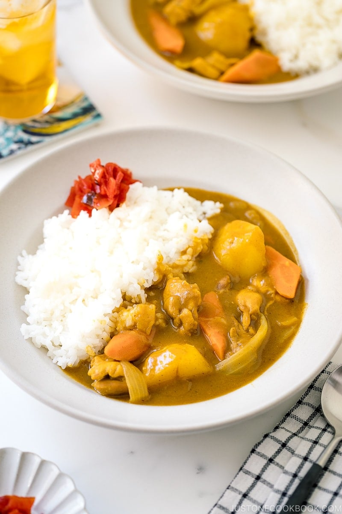

Japanese chicken curry
Home

Description
Delicious Japanese chicken curry recipe for a weeknight dinner! Tender pieces of chicken, carrots, and potatoes cooked in a rich, savory curry sauce, this Japanese version of curry is a must-have for your family meal.
Ingredients
this is the Ingredients that you might need
- 400g / 0.9lb onion sliced into 1cm / ⅜” wide pieces
- 250g / 0.6lb potato cut into 1.5cm / ⅝” cubes
- 100g / 3.5oz carrot sliced to 7mm / ¼” thick pieces (note 1)
- 1 tbsp oil
- ½ packet of 230g / 0.5lb House Vermont Curry (Mild, note 2)
- 800ml / 1.7pt water
- 4 cups cooked rice (hot)
- 4 Chicken Cutlets cut into 2.5cm / 1” wide strips (note 3)
Steps
- Add oil to a pot and heat over medium high heat./li>
- Add onion and sauté for a few minutes or until the onion becomes translucent and edges start getting slightly burnt.
- Add potatoes and carrots into the pot and stir for a couple of minutes or until the surface of the vegetables starts getting cooked.
- Add water and turn the heat up to bring it to a boil. Then reduce the heat to medium low and simmer for about 7 minutes or until the vegetables are nearly cooked through (note 4).
- Break the curry roux cake into small blocks along the lines and add them into the pot. Stir gently to blend the curry roux.
- Reduce the heat to low, place a lid on and cook for about 10 minutes or until the curry roux is completely dissolved. Stir occasionally as the curry tends to stick to the bottom of the pot.
- Check the consistency of the sauce. It should be like béchamel sauce. If it's too thick, adjust with some water. If too thin, cook further without the lid. It will thicken when cooled down as well.
- Turn the heat off.
- Place a cup of hot cooked rice onto one side of a plate. Place the chicken cutlet pieces next to the rice, leaning them on the rice so that there will be a space to pour the curry.
- Pour curry next to the chicken cutlet, put fukujinzuke on the side and serve immediately.